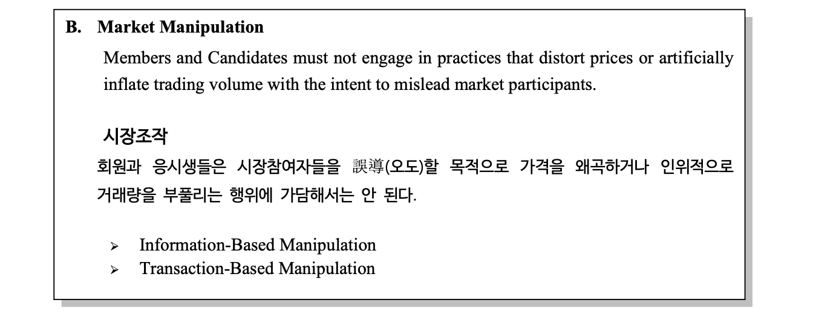

금융윤리와 사회책임
20249132 김형환
Standard 1 : Professionalism
A. 법규의 이해와 준수 (Knowledge of the Law)
B. 독립성과 객관성 (Independence and Objectivity)

C. 오해의 소지가 있는 표현 금지 (Misrepresentation)
Standard 2 : Integrity of Capital Markets
A. 중요한 미공개정보 (Material Nonpublic Information)
B. 시장조작 (Market Manipulation)

Assignment 1
기준1A : 법규의 이해와 준수
CFA는 업무를 행하는데 있어서 관련 정부기관, 규제기관, 협회 등의 다양한 법규를 준수해야함
법규는 법률, 규칙, 규정, 윤리강령 및 행위기준 등 업무와 연관된 일체의 규제 또는 가이드라인을 포괄
이러한 법규의 위반을 알면서도 가담하거나 도와서는 안되며, 위반행위와 연관되어서는 아니됨
법규간 상충이 있는 경우 상위 법규에 따라야 함
사례 2 : 법규간 상충시, 상위 법규를 따라야하나 이를 위반
- A는 미국계 다국적 투자자문사에서 일하면서, 개인 계좌로 공모주 거래를 희망
- A는 미국시민이고, 현재 카람바 소재의 지사에서 근무 및 거주
- 투자자문사 직원이 공모주 거래를 하는 경우, 미국은 합법 / 카람바는 불법
- A는 본인은 미국 시민이며, CFA 윤리강령에 따라 고객에게 공모주 거래사실을 공개하면 무관한 것으로 판단하여 공모주 거래에 참여시민으로서 미국법과 임직원으로서의 카람바법, 윤리강령이 상충하는 경우로 보임. 이 경우 임직원으로서의 카람바 증권법이 상위법규로서 준수해야하나 이를 무시하였으므로
A는 기준1A를 위반
사례 4 : 새로운 법규 도입 사실을 알지 못해 이를 위반
- B는 고객 소통 및 마케팅을 위해 소셜미디어 플랫폼을 적극 활용하고자 함
- 페이스북을 통해 성과보고서, 투자의견 및 추천정보 게재 및 트위터도 활용 예정
- 그러나, 해당국의 규제기관은 최근 소셜미디어 사용에 대한 새로운 가이드라인 발표
- B의 활동은 이 가이드라인과 상충되는 것으로 판단됨비교적 최근에 규제가 발표되었고, B가 이를 인지하지 못했다고 하더라도 관련 법규를 사전에 숙지하고 준수하지 못하였으므로
B는 기준1A를 위반
Assignment 2
기준1C : 오해 소지가 있는 표현 금지
- CFA는 투자추천 등 전문행위와 관련하여 고의로 오해 소지가 있는 표현을 해서는 안됨
사례 4 : 본인이 원작자인 것처럼 표현하여 기준을 위반(표절)
- A는 퀀트애널리스트로, 세미나에서 B가 발표한 새로운 모델에 관심을 가지고 있음
- A는 새로운 모델을 기반으로 몇가지 수정을 거쳐서 자사에 맞는 모델로 최적화 성공
- 최적화 모델을 본인이 개발한 것처럼 책임자에게 보고하였고, 사업화 추진 제안본인이 개발한 모델인 것처럼 모호한 표현을 사용하였으므로,
A는 기준1C를 위반.그러나, A가 모델을 최적화한 것은 공로이므로, 원작자가 B임을 명확하게 밝혔다면 최적화된 모델을 사업화하는 것은 기준 위반이 아님.
사례 6 : 오해의 소지를 피하고자 매우 복잡한 구조의 상품은 투자를 포기
- B는 연금펀드를 운용하는 채권매니저로, 최근 모기지 시장에 관심을 가지고 있음
- 구조화 모기지 증권에 투자하고자 하며, 다양한 기회가 존재함을 긍정적으로 평가
- 전문적인 소프트웨어로 평가해본 결과, 매우 복잡한 증권구조를 가지는 것을 확인
- 이로 인해, 각 증권마다 팀 차원에서 적절한 투자판단을 내리기 어렵다고 판단
- 따라서, 오해를 피하고자 덜 복잡한 모기지 증권에만 투자하는 것으로 결정B가 복잡한 구조화 모기지 증권에 투자하기로 하였다면, 매 증권마다 투자 판단을 내리기 위해 증권구조를 설명하고 이해하는 과정이 필요함. 이 과정에서 불필요한 오해가 발생할 수 있으므로,
B는 기준1C를 준수하기 위해 이러한 오해를 최소화 한 것임
Assignment 3 : 1B, 2A, 2B
기준 1B : 독립성과 객관성 유지
- CFA는 직무수행에 있어서 독립성과 객관성을 유지하기 위해 합리적 주의와 판단을 다해야 함
사례 5 : 고객 접대를 통해 독립성과 객관성 훼손
- A는 Z사의 연금기금을 운용하는 펀드매니저로, U사의 연금기금 운용사로 선정되기위해 노력중
- U사의 업무담당자 B에게 자금 기부 등 금전적 지원과 가족을 동행한 식사 접대 등 혜택을 제공함
- 이러한 지출은 모두 Z사의 마케팅 비용으로 처리되었으며, 커뮤니케이션 용도로 보고하였음연금기금 운용사 선정 담당자인 B에게 직접적인 금전적 지원을 하는 등 업무수행에 있어서 독립성과 객관성을 훼손하였으므로
A는 기준1B를 위반
기준 2A : 미공개정보 이용 금지
- CFA는 미공개정보를 활용하여 투자행위를 하거나 다른 사람에게 하도록 해서는 안 됨
사례 4 : 시장에 떠도는 루머를 이용하는 경우
- A는 운용사의 거래집행 트레이더로, 다른 회사의 B로 부터 Z사의 호실적이 예상된다는 루머를 받음
- 마침, A는 자사 포트폴리오 매니저로부터 Z사 주식의 매수 주문을 받았고, 빠르게 실행하였음이러한 소문은 시장에 흔히 떠돌며, 직접적인 내부자로부터 받은 정보가 아니므로 미공개정보라고 보기 어려움. 더군다나 A는 거래집행 트레이더로, 투자결정은 포트폴리오 매니저로부터 이루어지고 단순히 거래집행만 하므로,
A는 기준2A를 준수
기준 2B : 시장조작행위 금지
- CFA는 시장참여자를 오도할 목적으로 가격을 왜곡하거나 인위적으로 거래를 부풀리는 등 일체의 시장조작 행위를 해서는 안 됨
사례 3 : 자전거래를 통한 거래량 왜곡
- A는 펀드매니저로, 주식형 펀드와 혼합형 펀드를 운용하고 있으며 동일하게 D사의 주식을 보유
- D사 주식을 두 펀드에서 모두 매도하고자 하나, 유동성이 부족하여 매도가 어려운 상황
- 두 펀드간 교차거래를 통해 인위적으로 거래량을 부풀렸고, 그 결과 투자자 관심을 끌어 원하는 수량만큼 매도를 희망이는 자전거래를 통해 거래량을 인위적으로 부풀려 왜곡하는 시장조작행위에 해당하므로,
A는 기준2B를 위반
사례 5 : 모델 파라미터 조작을 통해 성과 평가 왜곡
- A는 투자은행의 구조화상품 설계 및 신용평가 담당자로, 그의 성과는 판매실적과 상품 신용등급에 연동
- 손실과는 연동되어있지 않아, 모델 파라미터를 조작하여 하방위험이 거의 없는 것처럼 보이게 하였음
- 이를 통해, 성공적인 신용등급과 판매실적을 이끌어냈으며 높은 성과급과 승진을 보상받았음
- 그러나, 시장 상황이 악화되면서 큰 손실이 발생하였고, 자본시장에 연쇄적인 충격을 야기본인의 이익을 위해 모델 파라미터를 조작하였고, 회사와 시장 전체에 큰 손실을 미쳤으므로 중대한 위반에 해당함.
A는 기준2B를 위반하였을 뿐만 아니라, 임직원으로서 기망, 사기행위이며 법률 위반의 소지가 있음.